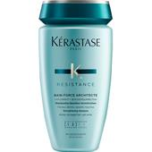
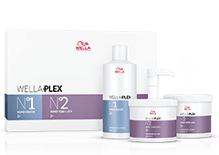
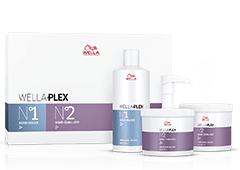

ABOUT:Shampoo SP Men by PAUL MITCHELL For a long time now, it's not just women who've been able to reap the benefits of beautiful cuts, healthy hair and glamorous styles. The SP Men range by PAUL MITCHELL was created with the intention of being a high-end, high-quality hair product range, which can meet all and any demands for BOTH men and women hair and styles, and aims for excellent results. Perfection is the key theme that stands above all other factors when it comes to the SP Men range, the most distinguishing feature of which is its plain black packaging. The shampoos will give your hair the perfect care it needs, remove dirt and grease from deep down in the very fibres of your hair with ease, and at the same time, will make your hair ready for quick and efficient styling.
The right shampoo - the right choiceIn the SP Mend women range, you'll find different shampoos with their own unique qualities, which can be also used every day by men and women with sensitive hair. Our sensitive shampoo is geared towards particularly sensitive hair, and the Refresh variation has a refreshing effect, vitalises your hair and can also be used with curly and wavy hair. If you use a lot of styling products and want to get the remnants out of your hair without any bother, Remove is the shampoo for you.
PRICE: R180 {SMALL}
R250 {MEDIUM}
R400 {LARGE}
STOCK AVAILABILITY: We have MORE THAN 60 KERASTASIE shampoo left.

 

| weight | dimension | barcode |
| 550ml | 2(120+160) |